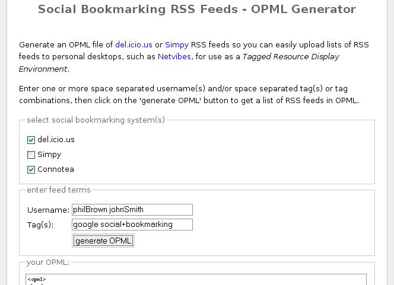

Following the previous couple of posts on an OPML generating web page application for collating the RSS feeds for the Simpy and del.icio.us social bookmarking systems, I have now tidied up the code, added Connotea to the mix, and included support for generating feeds that cover several systems at once.

Please feel free to try out this new version of my Social Bookmarking Systems OPML Feed Generator.
All comments appreciated, especially bug reports, suggestions for other social bookmarking systems to include, and details about how you've used the generated OPML feeds/which online services or desktop applications you've used them with, etc.
Posted by ajh59 at January 5, 2006 11:28 PMI think having Connetea is excellent. Would you be interested developping an OPML for Engineering Village 2 where a user can track a term i.e nanotechnology, an author and a journal title all in one OPML feed?
thanks
rafael
what about allowing the user to specify username and service on an individual basis? I mean something like on each line ask service, username, tag(s). Maybe also allowing user to enter URL of a known feed to take care of locally hosted systems like Scuttle would be cool.
Posted by: todd at January 6, 2006 05:57 PMThis is great. Let us know when you get CiteULike into the mix!
Posted by: Rick at January 7, 2006 06:20 AMI have just added citeulike and scuttle, as well as a user specified domain option.
On the to-do list are the ability to build up lists of users/tags dynamically (using javascript/dom (Code snippets/references/examples that i can 'reuse' are most welcome;-), and support for generating paths that take groups into account.
tony
Posted by: tony at January 8, 2006 01:07 PM